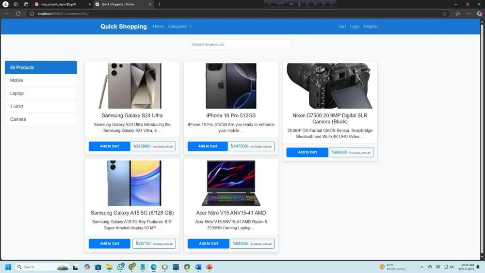
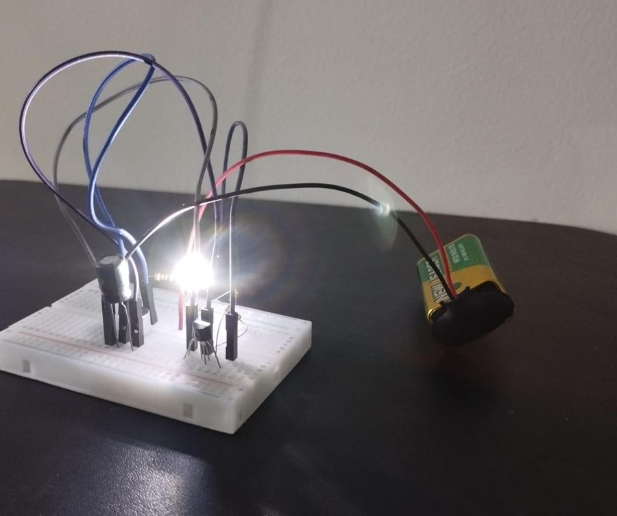

Quick Shopping
An e-commerce site with registration and login, product search by category, a cart, and an admin dashboard for products, users and orders. Deployed on Apache Tomcat.
Four projects from my university lab work — a web application, a graphics program, a Linux mail server and an electronics circuit. Use the buttons to filter them by type (this filter is powered by jQuery). The code is on my GitHub profile.

An e-commerce site with registration and login, product search by category, a cart, and an admin dashboard for products, users and orders. Deployed on Apache Tomcat.
A solar system built with OpenGL, designed with UI and UX in mind so that the planets and their movement are easy to follow.
A local mail system on Ubuntu 22.04 in VirtualBox. Two users send and receive mail with attachments, and I used the mail logs to find and fix problems. Built with a teammate.

A circuit with no IC that turns an LED on when a microphone picks up a clap. Two BC547 transistors amplify the signal, and the circuit runs on a 9V battery. Built with three teammates.
| Project | Type | Main technologies | Team work |
|---|---|---|---|
| Quick Shopping | Web application | Java, JSP, Hibernate, MySQL, Tomcat | Individual |
| Solar system in OpenGL | Graphics software | OpenGL | Individual |
| Self-hosted mail server | System / network | Ubuntu, Postfix, Dovecot, Mutt | 2 members |
| Clap switch circuit | Electronics hardware | BC547 transistors, breadboard, 9V battery | 4 members |